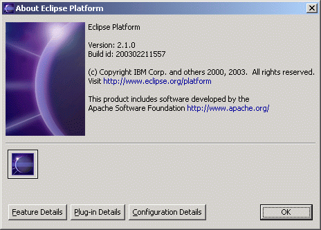
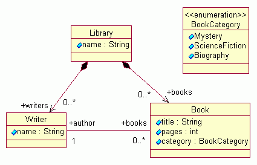

This tutorial is a step-by-step description of the process of creating an EMF model and generating a simple model editor for it. Following this tutorial will show how easy EMF makes it to go from a simple model definition to a fully functioning editor for that model.
The screenshots are based on version 2.0.1 of the Eclipse SDK and version 1.0.1 (build 20021003_2227SL) of EMF.
The model we will generate looks like this in UML (see the "Eclipse Modelling Framework Overview" paper for a description of this model):

We will show how an EMF model can be generated from a set of Java interfaces and classes that correspond to the classes and enumerated types, respectively, in the library model. This code is the bare minimum required to illustrate the desired features. Based on it, an Ecore model and a GenModel will be constructed, which will then drive generation of the remaining code. The code is annotated with "@model" tags in javadoc comments, in order to specify any non-default values for the attributes and references of the Ecore objects.
Library.java
package org.eclipse.example.library; import java.util.List; /** * @model */ public interface Library { /** * @model type="Book" containment="true" */ List getBooks(); /** * @model type="Writer" containment="true" */ List getWriters(); /** * @model */ String getName(); }
Book.java
package org.eclipse.example.library; /** * @model */ public interface Book { /** * @model */ String getTitle(); /** * @model default="100" */ int getPages(); /** * @model opposite="books" */ Writer getAuthor(); /** * @model */ BookCategory getCategory(); }
Writer.java
package org.eclipse.example.library; /** * @model */ public interface Writer { /** * @model */ String getName(); /** * @model type="Book" opposite="author" */ java.util.List getBooks(); }
BookCategory.java
package org.eclipse.example.library; /** * @model */ public class BookCategory { /** * @model name="Mystery" */ public static final int MYSTERY = 0; /** * @model name="ScienceFiction" */ public static final int SCIENCE_FICTION = 1; /** * @model name="Biography" */ public static final int BIOGRAPHY = 2; }
The EMF Runtime package includes the EMF generator and a number of related plugins. After installing the package, verify that they are available in your Eclipse environment:
Create a new Java project in the workspace:


Create the first Java interface:


Create the other two interfaces and the class in the same way. Of course, to create the class, select "New/Class" from the pop-up menu, instead of "New/Interface".
Create the GenModel:


The GenModel shows a root object, representing the the whole model. The model object has children that represent its packages, whose children then represent classifiers (classes and datatypes, including enumerated types). The children of classes are class attributes, references, and operations; the children of enumerated types are enum literals.

In most cases, the properites need not be changed from their default values, but these options can provide a great deal of control over the code that gets generated. This topic will be explored more fully in future tutorial material; for now, select several different GenModel objects, and observe their properties.
The GenModel is also the place where you initiate the code generation. By right-clicking on an object in the model, you can generate code for it.
After generation, the class interfaces and enum class will have been created (if the model was imported from Rose) or completed (if the model was defined using annotated Java), and a new pair of interfaces will have been created for the package itself and for the factory. There will also be two new packages, with "impl" and "util" suffixes, which contain implementations of the interfaces and additional utility classes, and a "plugin.xml" manifest file for the model plugin.
If you change the model, you can regenerate it, and changes will be merged with any hand modifications that may have been made to the code. You can also selectively generate a subset of the model code by right-clicking on a package, class, or enum object and selecting "Generate Model" from the pop-up menu.
A fully functional Eclipse editor can also be generated for any model. By default, it is split between two plugins: an "edit" plugin includes adapters that provide a structured view and perform command-based editing of the model objects; an "editor" plugin provides the UI for the editor and wizard.

In general, if you wish to generate the model, edit, and editor plugins in a single step, you can do so by selecting "Generate All" from the pop-up menu.
The code should be compiled automatically as it is generated, and should recompile whenever it is changed. If you have disabled automatic building in the workbench preferences, you can initiate compilation manually:

In order to run plugins in a runtime workbench, a lunch configuration must first be set up:


A runtime workbench can be launched from the "Launch Configurations" dialog by clicking on the "Run" button. Once the launch configuration has been set up, it can also be launched from the "Run" button on the toolbar.

The library model wizard can now be used to create a new instance of the model.


The root object in this editor corresponds to the "My.library" resource. Under it lies a single library, the object which was selected as the model object in the wizard.